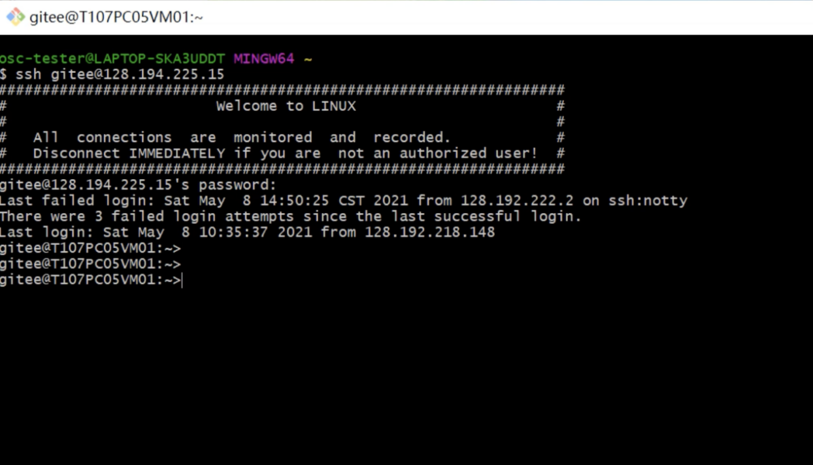
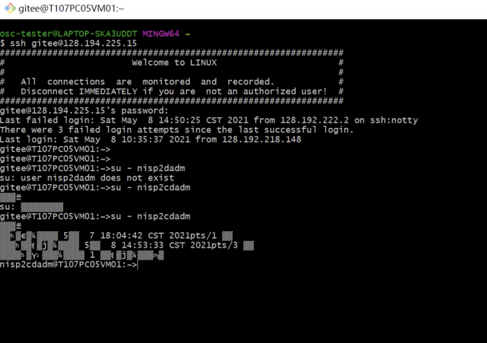
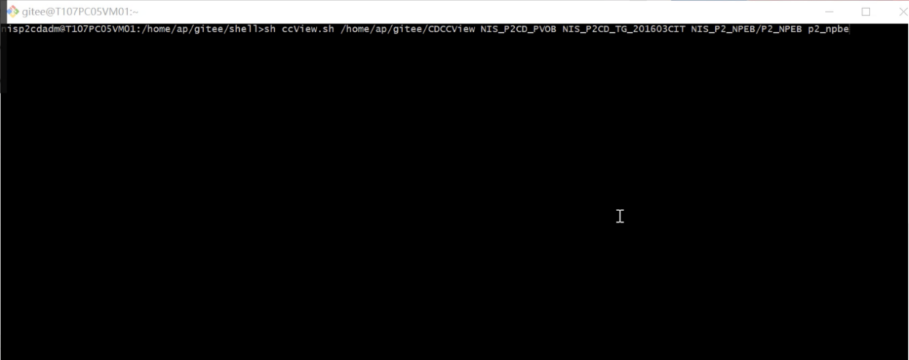
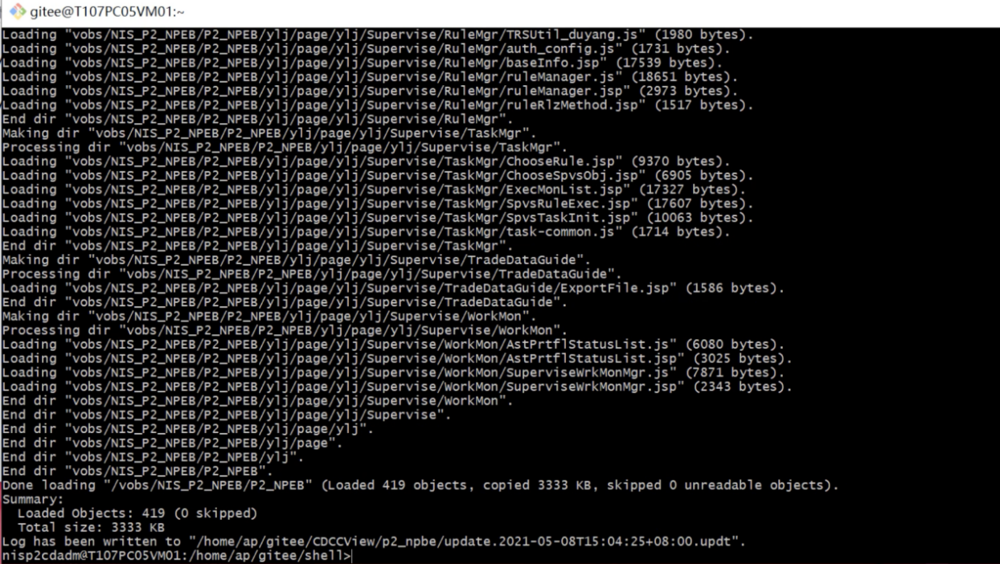
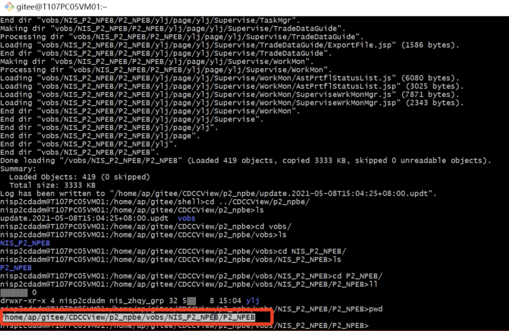
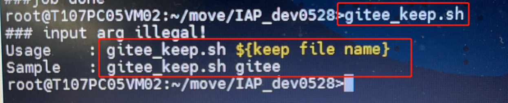
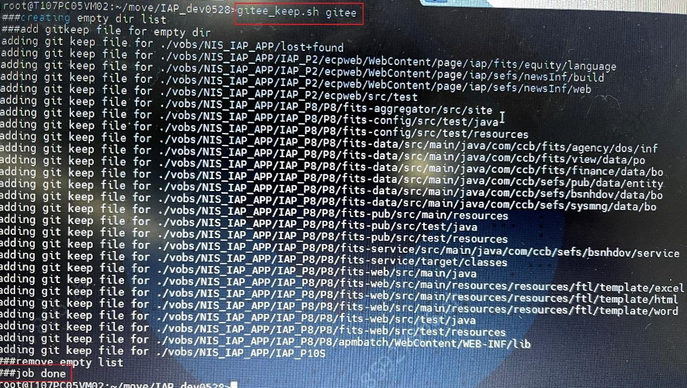
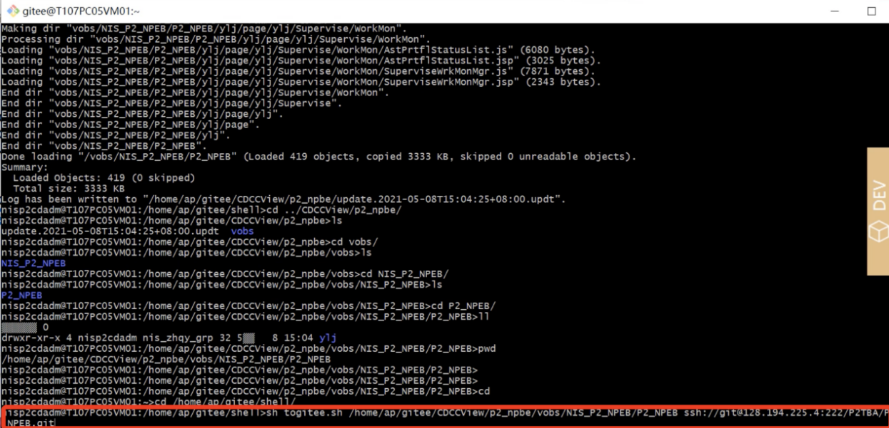
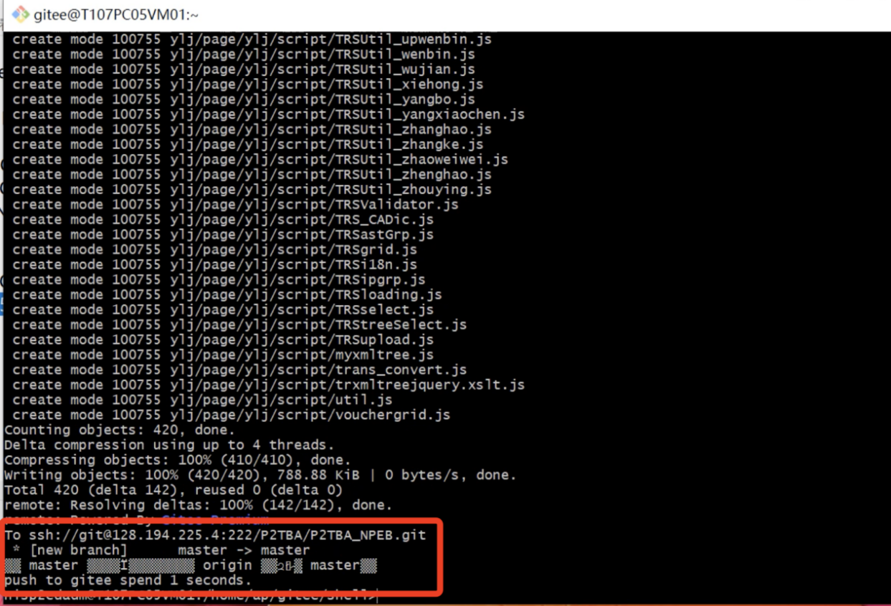

推荐通过登录迁移服务器进行迁移，该服务器已经准备好了迁移脚本，登录后可直接使用。具体服务器地址以及申请[ 参考]

切换到有权限的用户（配置库体系虚拟管理员账号或使用root）

1)服务器创建静态视图
ssh 登录迁移服务器
在 /root 目录下执行命令
sh ccView.sh $1 $2 $3 $4 $5
$1：视图存储路径
$2：pvob名称
$3：流名称
$3：组件名称
$5：视图名称

回车后执行

2)初始化git 仓库
cd $1/$5 确认文件路径。
/root 目录下执行
sh togtiee.sh $1 $2
$1：确认后的项目路径
$2: gitee仓库克隆地址
确认项目路径

保留空目录（视项目组需求而定）
空目录在git中默认无法保存，如想保存空目录，需要在该目录下创建文件(空文件即可)，我们提供了批量处理导出仓库空文件的程序，如下图例。

命令行运行gitee_keep.sh,在1号参数位输入想要创建用来保留空目录的空文件文件名，如sample中的gitee(厦门事业群默认的空文件名)，如担心未来出现误删除或影响编译等情况发生，可创建为隐藏文件如.gitkeep（文件名前添加’.’）。
使用案例：

如上图，通过gitee_keep.sh完成创建文件处理，屏幕上输出的内容为已创建文件的空目录名。
执行迁移到gitee脚本

推送成功

平台页面查看